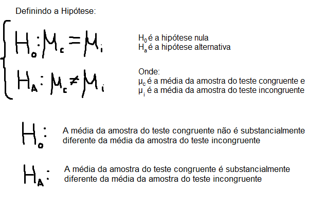
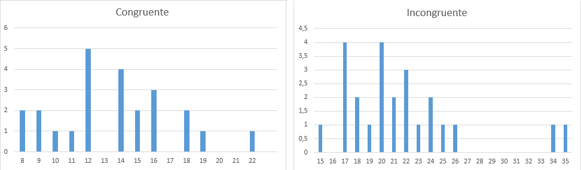
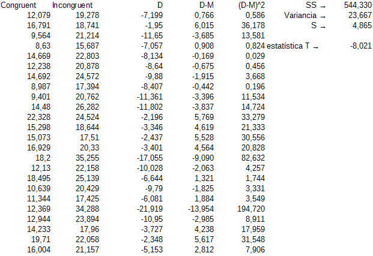
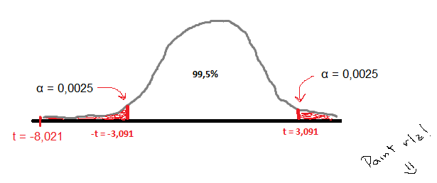

Projeto 1: Estatística – Efeito Stroop
Nanodegree Analista de Dados
Autor: Nikolas Thorun
Questões para investigação:
1) Qual é a nossa variável independente? Qual é a nossa variável dependente?
A variável independente é a condição de congruência(se as palavras são congruentes com as cores ou não). A variável dependente é o tempo de resposta do indivíduo, pois varia de acordo com a condição de congruência.
2) Qual seria um conjunto apropriado de hipóteses para essa tarefa? Que tipo de teste estatístico você espera executar? Justifique suas escolhas.
O tempo médio de resposta dos indivíduos aos dois testes é muito diferente? Ou seja, dado um determinado nível alfa, rejeitaremos o nulo ou não?

O teste estatístico esperado para executar esta tarefa é o teste t, pois não conhecemos a média e o desvio padrão da população e, além disso, o tamanho da amostra é pequeno(n<30), impossibilitando a utilização do teste z. O teste t serve para apontar o quão diferentes duas amostras são uma da outra e o utilizaremos com variáveis dependentes, pois queremos medir a diferença dos parâmetros pessoais depois de uma intervenção(a introdução de um teste com palavras incongruentes com as cores). Como queremos saber se as amostras são diferentes uma da outra, o teste t será bicaudal, pois o valor da estatística t poderá ser muito positivo ou muito negativo.
3) Reporte alguma estatística descritiva em relação a esse conjunto de dados. Inclua, pelo menos, uma medida de tendência central de pelo menos uma medida de variabilidade.
Como mostra a figura abaixo, temos como tendência central a média, a mediana e a moda. Como temos valores únicos, os dados foram ajuntados em uma tabela de frequências na qual os dados são inseridos a partir de suas unidades.
Como medidas de variabilidades, temos a amplitude(range), a amplitude interquartil(IQR), e o desvio padrão.
4) Forneça uma ou duas visualizações que mostre a distribuição da amostra de dados. Escreva uma ou duas sentenças sobre o que você observou do gráfico ou gráficos.

Analisando os gráficos de frequência, podemos perceber que ambos tem uma tendência à distribuição normal, porém o tamanho das amostras é pequeno para mostrar isso claramente. Analisando as amplitudes amostrais, tendemos a achar que o gráfico do teste incongruente é muito mais espalhado, porém, os valores da amplitude interquartil são bastante próximos, pelo fato do teste incongruente apresentar outliers.
5) Agora desempenhe o teste estatístico e reporte seus resultados. Qual seu nível de confiança e o valor estatístico crítico? Você rejeitou a hipótese nula ou falhou ao tentar rejeitá-la? Encontre uma conclusão em relação ao experimento da tarefa. Os resultados estão de acordo com suas expectativas?
Para este teste t temos duas hipóteses:
H0: As duas amostras não terão diferenças substanciais
H1: As duas amostras serão substancialmente diferentes
O intervalo de confiança desejado é de 99,5%, ou seja, nível alfa = 0,005.
Para achar o valor da estatística t, precisamos das médias amostrais, do desvio padrão da diferença das amostras(S) e o tamanho das amostras(n). Como estamos lidando com amostras, temos que inferir o desvio padrão da população utilizando a correção de Bessel, por isso a variância será dividida por 23(n-1). As médias amostrais estão no quadro da questão 3.

Temos que o valor da estatística t é -8,021. Como escolhemos o nível alfa igual a 0,005 e o teste é bicaudal, na tabela T procuramos na coluna 0,0025 com 23 graus de liberdade, já que o tamanho da amostra é 24. O valor de t crítico encontrado é 3,091.

Como
o valor da estatística t encontrado está dentro da
região crítica, abaixo de -t, nós rejeitamos a
hipótese nula, já que provamos que as duas amostras são
substancialmente diferentes. O resultado já era esperado, já
que o experimento foi realizado por este autor e o resultado mostrou
uma diferença considerável entre os tempos dos dois
testes(mais de 7 segundos). No início do projeto vimos que a
média do teste incongruente é bem próxima do
último valor do teste congruente(22,328), confirmando a
informação de que os tempos do teste incongruente são
bem maiores que o do teste congruente.
6) Opcional: O que você acha que é responsável pelo efeito observado? Consegue pensar em uma alternativa ou tarefa similar que resultaria em um efeito parecido?
Imaginei que ao passar nossos olhos sobre uma palavra do teste incongruente, nosso subconsciente a lê automaticamente e o atraso no tempo de resposta seria causado por um conflito decorrente do processo de escolha do nosso cérebro entre duas palavras. Ao pesquisar um pouco sobre o assunto, descobri que o nome disso é interferência semântica, pois só ocorre quando utilizamos palavras. Sendo assim, imagino dois testes que provavelmente teriam o mesmo resultado:
1
– Um teste com formas geométricas e, dentro delas, o
nome de outra forma geométrica.
Exemplo: Um quadrado com
a palavra “triângulo” dentro dele.
2 – Um teste mostrando imagens de ações, com uma palavra descrevendo outra ação logo abaixo.
Exemplo: Uma imagem de uma pessoa bebendo água e abaixo, a palavra “comendo”